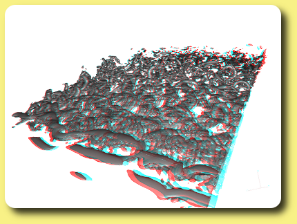

In Cassiopee module CPlot, Red/Cyan anaglyph mode is triggered by:
CPlot.setState(stereo=1).
In tkCassiopee interface, anaglyph can be triggered in View:tkStereo.
Red/Cyan glasses are required!
View of an octree mesh (red/cyan anaglyph) by B. Cantaloube.
View of a model of grand canyon (red/cyan anaglyph) by C. Benoit.
View of a model of roses (red/cyan anaglyph) by C. Benoit.
View of an agglomerated mesh around a M6 wing (red/cyan anaglyph) by B. Cantaloube.

Turbulence (iso-Q) over a wing (red/cyan anaglyph) by M. Terracol.
Turbulence (iso-Q) near a slat (red/cyan anaglyph) by M. Terracol.